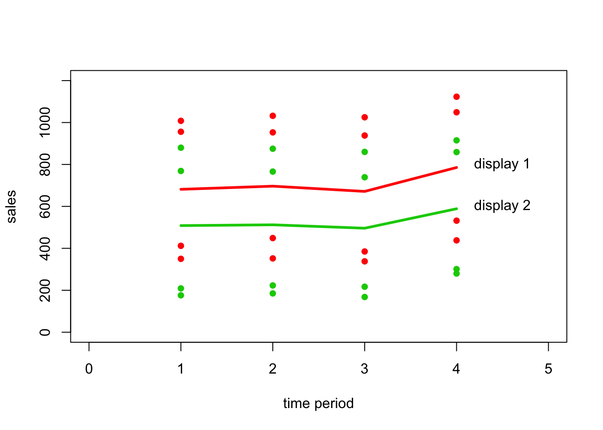

library(plyr)dt <- read.table("./data/CH27PR13.txt",
col.names = c("response", "store", "display", "time_period"))
dt$store = as.factor(dt$store)
dt$display = as.factor(dt$display)
dt$time_period = as.factor(dt$time_period)fit = aov(response~display * time_period + Error(store/(display)), dt)
residuals = proj(fit)[[4]][, "Residuals"]
residuals = data.frame(id=dt$display, res=residuals)
residuals = arrange(residuals, id)
residuals = matrix(residuals$res, 8, 4, byrow=T)
colnames(residuals) = c("k=1", "k=2", "k=3", "k=4")
rownames(residuals) = paste("i", c(1:4, 1:4), sep="=")
residuals## k=1 k=2 k=3 k=4
## i=1 9.250 -8.750 1.250 -1.750
## i=2 -11.750 -2.750 15.250 -0.750
## i=3 7.750 -5.250 5.750 -8.250
## i=4 -5.250 16.750 -22.250 10.750
## i=1 3.625 -3.125 -13.875 13.375
## i=2 15.375 6.625 7.875 -29.875
## i=3 -8.375 -3.125 -3.875 15.375
## i=4 -10.625 -0.375 9.875 1.125plot(proj(fit)[[4]][, "Residuals"]~dt$response-proj(fit)[[4]][, "Residuals"],
xlab="fitted values", ylab="residuals", ylim=c(-30, 30))
abline(h=0)qqnorm(qqplotData$y, ylim=c(-30, 30))
qqline(qqplotData$y)par(mfrow=c(1,2))
dat = subset(dt, display==1)
store = dat$store
time_period = dat$time_period
response = dat$response
interaction.plot(time_period, store, response, main="display 1")
dat = subset(dt, display==2)
store = dat$store
time_period = dat$time_period
response = dat$response
interaction.plot(time_period, store, response, main="display 2")S_display = summary(fit)[[1]][[1]][1,] + summary(fit)[[2]][[1]][2,]
S_display[1,3] = S_display[1,2]/S_display[1,1]
S_display[1,4] = S_display[1,3]/summary(fit)[[3]][[1]][3,3]
S_display[1,5] = 0
variance_table = rbind(summary(fit)[[2]][[1]][1,], S_display, summary(fit)[[3]][[1]])
rownames(variance_table) = c("display", "S(display)", "time period",
"display:time period", "Error")
variance_table## Df Sum Sq Mean Sq F value Pr(>F)
## display 1 266085 266085 325.8684 0.0003708 ***
## S(display) 6 3004019 500670 2355.9395 < 2.2e-16 ***
## time period 3 53322 17774 83.6363 9.216e-11 ***
## display:time period 3 691 230 1.0833 0.3813307
## Error 18 3825 213
## ---
## Signif. codes: 0 '***' 0.001 '**' 0.01 '*' 0.05 '.' 0.1 ' ' 1meanTime = ddply(dt, .(time_period, display), summarise, mean=mean(response))
dt <- read.table("./data/CH27PR13.txt",
col.names = c("response", "store", "display", "time_period"))
plot(subset(dt, time_period==1&display==1)$time_period, subset(dt, time_period==1&display==1)$response,
xlim=c(0,5), ylim=c(0, 1200), xlab="time period", ylab = "sales", pch=16, col=2)
points(subset(dt, time_period==2&display==1)$time_period, subset(dt, time_period==2&display==1)$response,
xlim=c(0,5), ylim=c(0, 1200), xlab="time period", ylab = "sales", pch=16, col=2)
points(subset(dt, time_period==3&display==1)$time_period, subset(dt, time_period==3&display==1)$response,
xlim=c(0,5), ylim=c(0, 1200), xlab="time period", ylab = "sales", pch=16, col=2)
points(subset(dt, time_period==4&display==1)$time_period, subset(dt, time_period==4&display==1)$response,
xlim=c(0,5), ylim=c(0, 1200), xlab="time period", ylab = "sales", pch=16, col=2)
mean1 = subset(meanTime, display==1)
points(mean1$mean~mean1$time_period, type='l', col=2, lwd=3)
points(subset(dt, time_period==1&display==2)$time_period, subset(dt, time_period==1&display==2)$response,
xlim=c(0,5), ylim=c(0, 1200), xlab="time period", ylab = "sales", pch=16, col=3)
points(subset(dt, time_period==2&display==2)$time_period, subset(dt, time_period==2&display==2)$response,
xlim=c(0,5), ylim=c(0, 1200), xlab="time period", ylab = "sales", pch=16, col=3)
points(subset(dt, time_period==3&display==2)$time_period, subset(dt, time_period==3&display==2)$response,
xlim=c(0,5), ylim=c(0, 1200), xlab="time period", ylab = "sales", pch=16, col=3)
points(subset(dt, time_period==4&display==2)$time_period, subset(dt, time_period==4&display==2)$response,
xlim=c(0,5), ylim=c(0, 1200), xlab="time period", ylab = "sales", pch=16, col=3)
mean2 = subset(meanTime, display==2)
points(mean2$mean~mean2$time_period, type='l', col=3, lwd=3)
text(4.5, 800, 'display 1')
text(4.5, 600, 'display 2')
summary(fit)[[3]][1]## Df Sum Sq Mean Sq F value Pr(>F)
## time_period 3 53322 17774 83.636 9.22e-11 ***
## display:time_period 3 691 230 1.083 0.381
## Residuals 18 3825 213
## ---
## Signif. codes: 0 '***' 0.001 '**' 0.01 '*' 0.05 '.' 0.1 ' ' 1summary(fit)[[3]][[1]][2,]## Df Sum Sq Mean Sq F value Pr(>F)
## display:time_period 3 690.62 230.21 1.0833 0.3813summary(fit)[[3]][[1]][1,4, drop=FALSE]## F value
## time_period 83.636L = ddply(dt, .(display), summarise, mu = mean(response))
L1 = L$mu[1] - L$mu[2]
L1## [1] 182.375L = ddply(dt, .(time_period), summarise, mu = mean(response))
L2 = L$mu[1] - L$mu[2]
L2## [1] -9.375L3 = L$mu[2] - L$mu[3]
L3## [1] 20.625L4 = L$mu[3] - L$mu[4]
L4## [1] -103.375